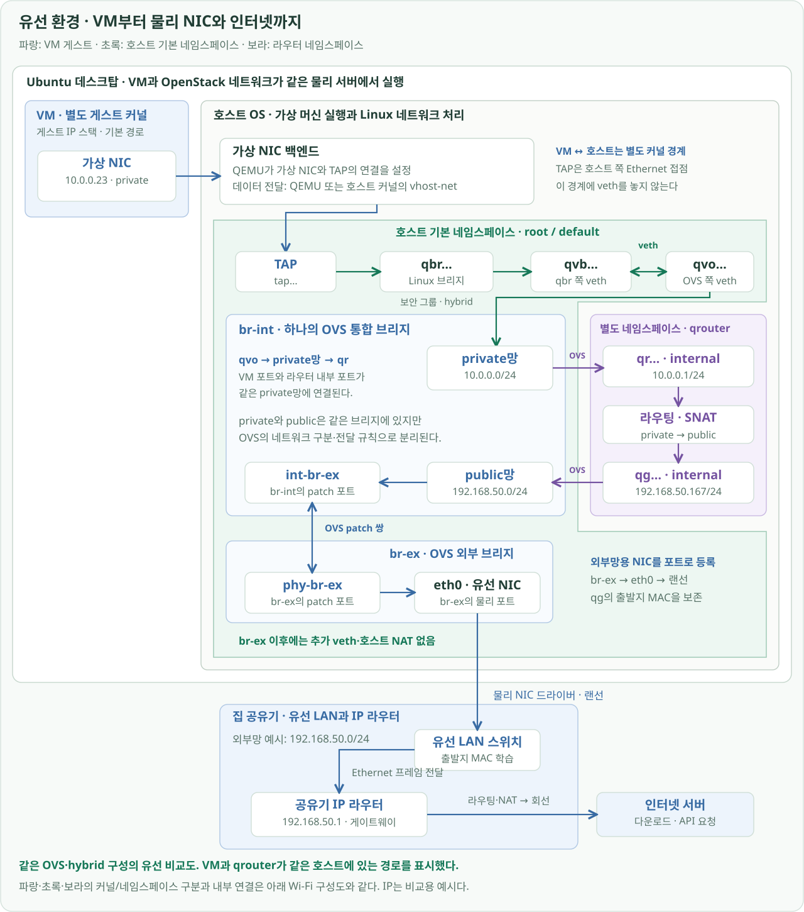
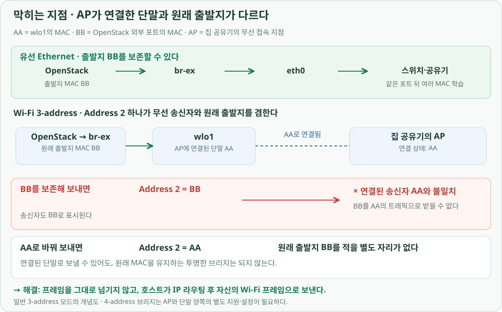
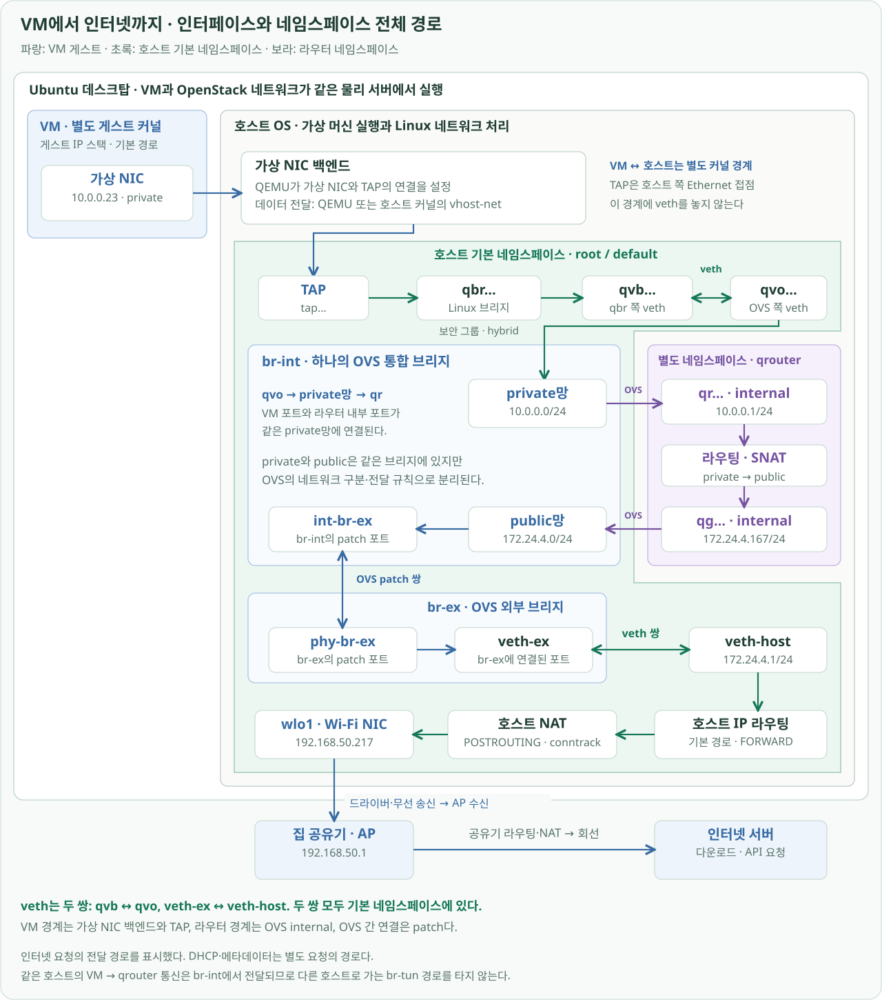
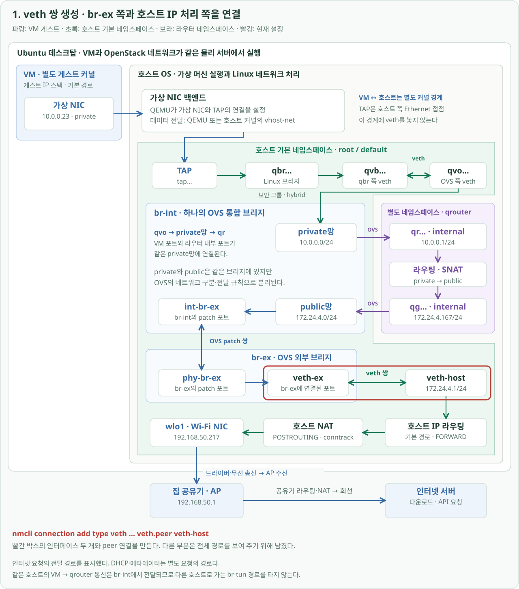
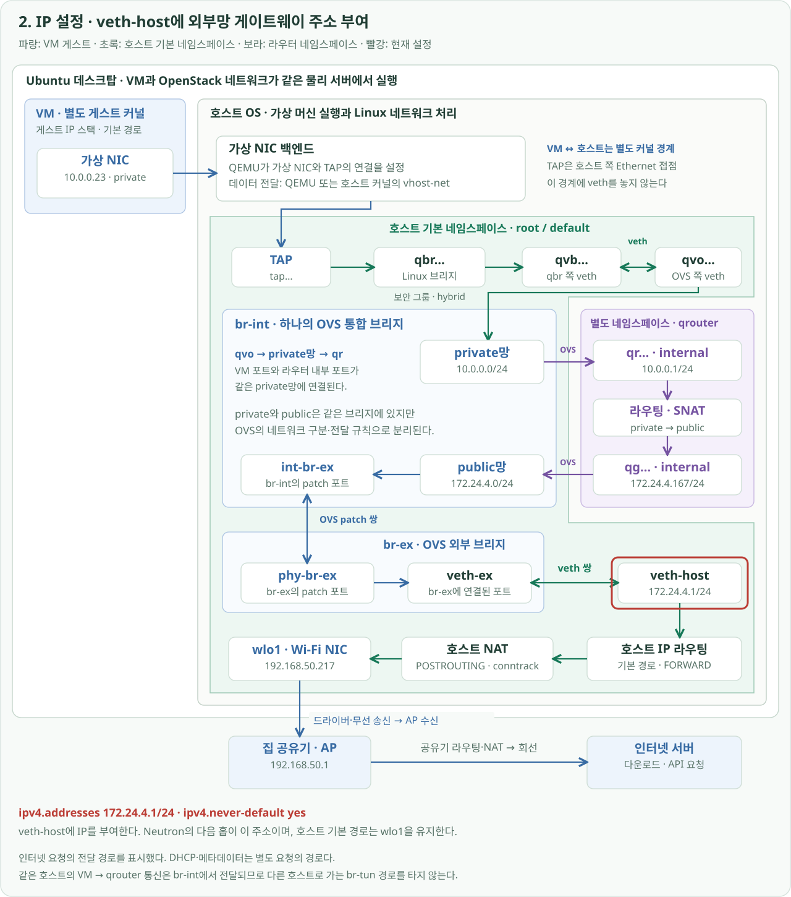
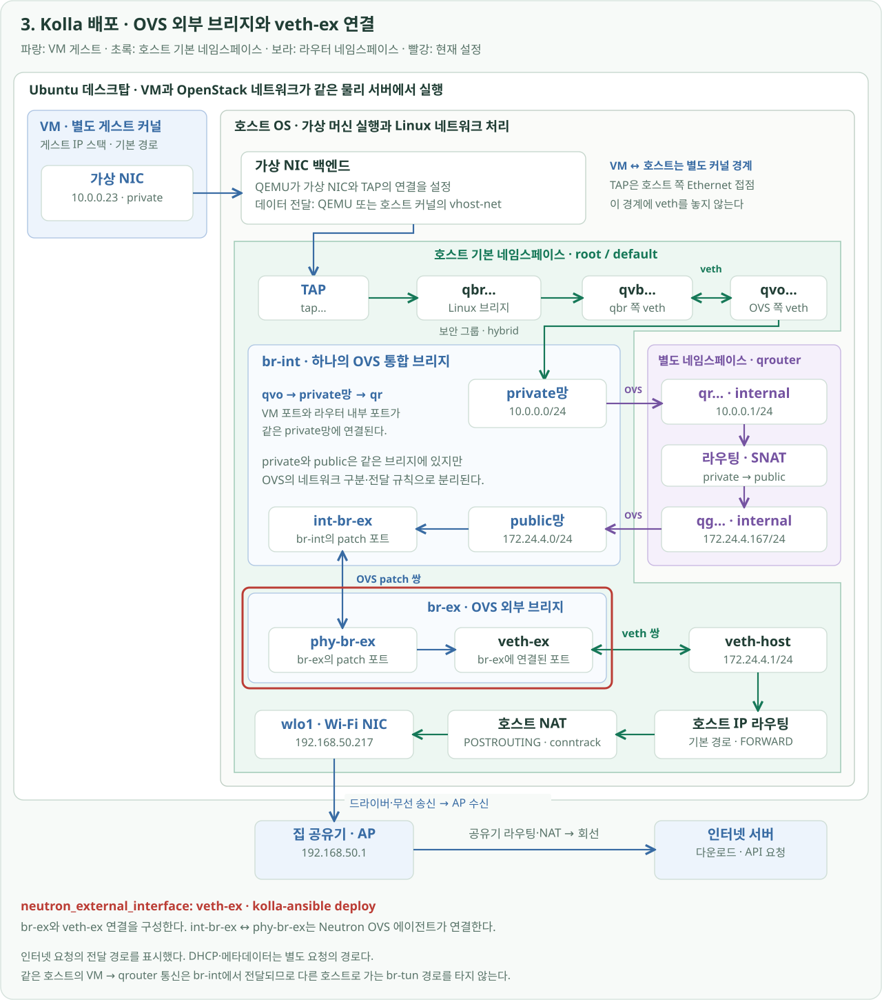
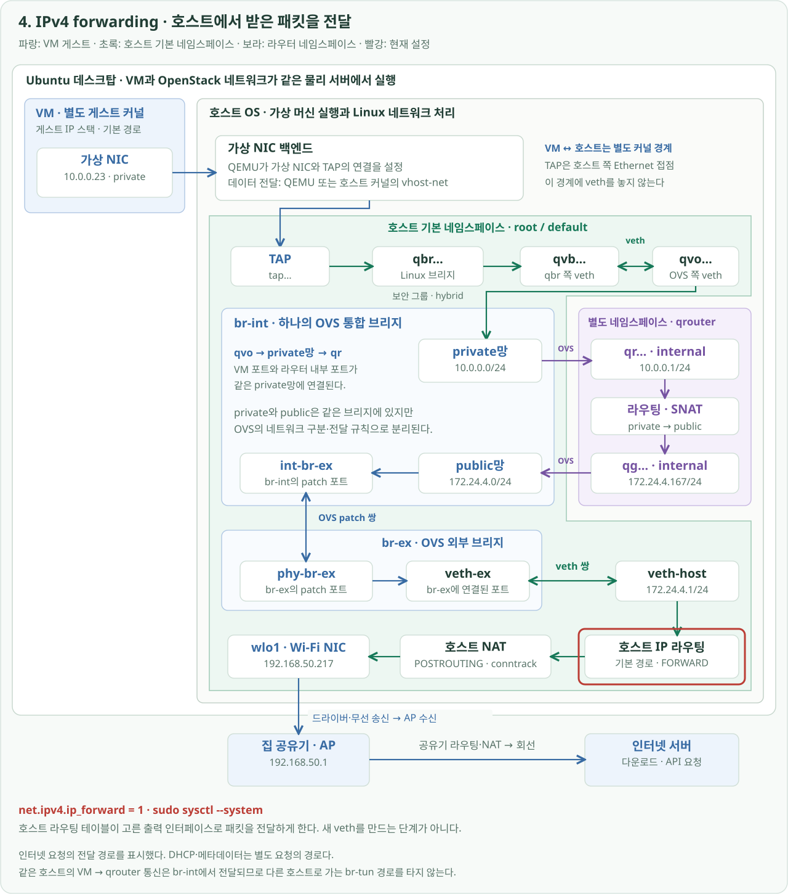
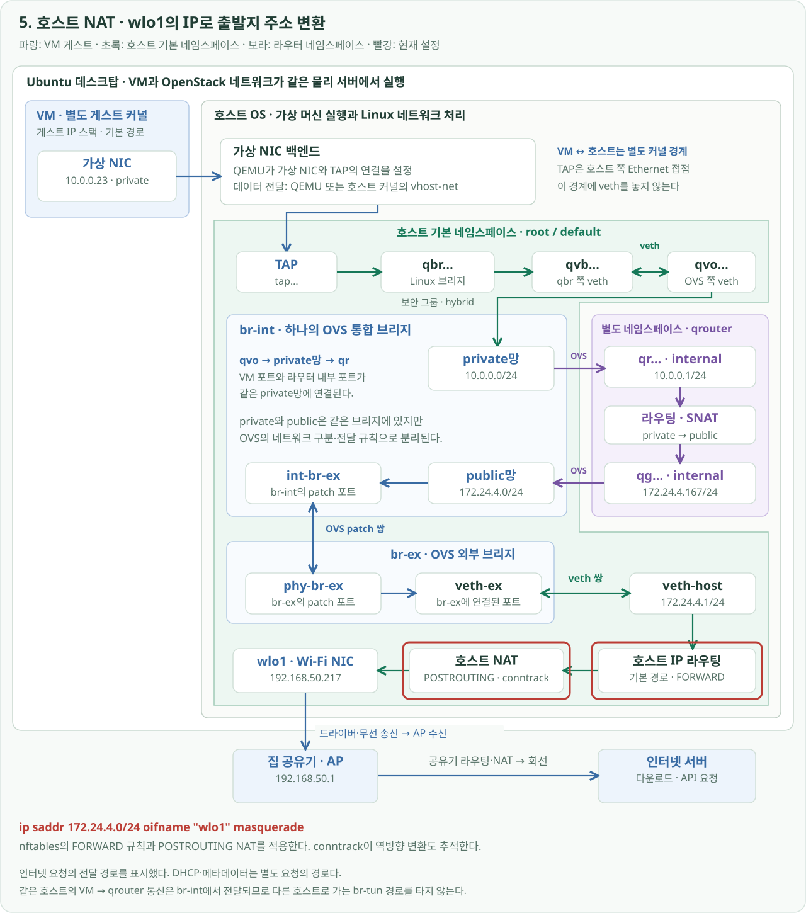
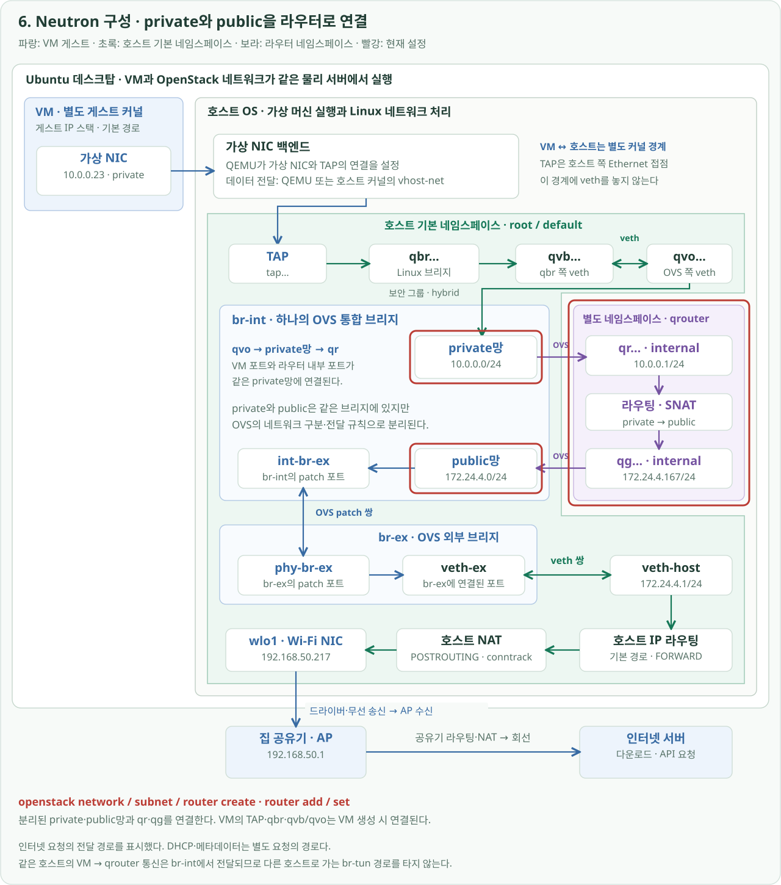
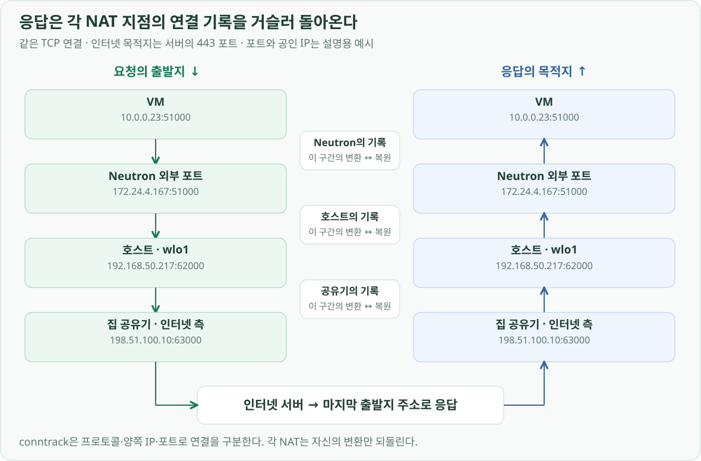

프로젝트 소개 · OpenStack 구축 · 전체 문서
구성 배경
집의 데스크탑에 OpenStack을 설치할 때 먼저 해결해야 했던 것은 VM의 인터넷 연결이었습니다. 데스크탑은 wlo1이라는 Wi-Fi 인터페이스로 집 공유기에 연결돼 있었습니다. VM도 이 연결을 통해 이미지를 내려받고 외부 API를 호출할 수 있어야 했습니다.
유선 환경이라면 외부망용 물리 NIC를 br-ex에 연결해 프레임을 내보낼 수 있습니다. 하지만 집의 일반적인 Wi-Fi 연결에서는 OpenStack 쪽 MAC 주소를 그대로 전달하는 브리지 구성이 어려웠습니다. 그래서 br-ex와 호스트를 veth 쌍으로 연결하고, 호스트가 라우팅·NAT를 거쳐 wlo1으로 내보내도록 구성했습니다.
유선 환경에서는 외부망 NIC를 br-ex에 연결한다
유선 환경에서는 외부망용 물리 NIC인 eth0를 OpenStack의 외부 브리지 br-ex에 포트로 등록할 수 있습니다. br-ex가 프레임을 eth0로 넘기면 NIC가 랜선으로 전송합니다. 브리지와 NIC 사이에 veth를 하나 더 만들 필요는 없습니다. 바깥 스위치는 같은 포트 뒤에 여러 MAC 주소가 있어도 학습해 전달합니다.
아래는 이 프로젝트와 같은 OVS·hybrid 구성을 유선 NIC에 연결했을 때의 전체 경로입니다. VM과 Neutron 라우터가 같은 호스트에 있는 상황이며, 아래 Wi-Fi 구성도와 장치 배치·색상을 맞췄습니다. 파란 영역은 VM의 별도 게스트 커널, 초록 영역은 호스트 기본 네임스페이스, 보라 영역은 호스트 커널 안의 qrouter 네임스페이스입니다.

VM에서 나온 프레임은 가상 NIC 백엔드 → TAP → qbr → qvb·qvo → br-int의 private망을 거칩니다. 이어 qr로 Neutron 라우터에 들어가 라우팅·SNAT를 거친 뒤, qg에서 br-int의 public망으로 나옵니다. int-br-ex ↔ phy-br-ex라는 OVS patch 쌍을 지나면 br-ex이고, 여기서는 물리 포트 eth0가 프레임을 랜선으로 내보냅니다. Neutron의 OVS 네트워크 구성
이 유선 예시에서는 public망이 집 공유기의 유선 LAN과 같은 192.168.50.0/24에 연결됩니다. qg 주소는 예시로 192.168.50.167, 다음 홉은 공유기 192.168.50.1로 표시했습니다. 아래 실제 Wi-Fi 구성의 172.24.4.0/24는 호스트 안에 따로 만든 외부망이므로 두 그림의 public 주소가 다릅니다.
여기서 eth0는 호스트의 IP 라우터가 아니라 브리지가 사용하는 출구 포트입니다. Neutron 라우터가 만든 프레임의 출발지 MAC은 qg의 MAC이며, eth0가 송신한다고 자신의 MAC으로 바꾸지 않습니다. 따라서 br-ex 이후에 호스트 라우팅·NAT나 veth-ex ↔ veth-host가 필요하지 않습니다. Neutron 라우터의 SNAT와 집 공유기의 NAT는 그대로 존재합니다.
Wi-Fi에서는 왜 같은 방식으로 연결하기 어려울까?
Wi-Fi도 같은 방식으로 br-ex → wlo1 → 집 공유기를 연결하고 싶었지만, 일반적인 Wi-Fi 클라이언트 연결은 호스트 뒤 장치의 MAC 주소를 그대로 전달하는 브리지로 사용하기 어렵습니다. 아래 그림에서 AA는 AP에 연결된 wlo1의 MAC, BB는 OpenStack에서 나오는 프레임의 출발지 MAC입니다.

집 공유기에는 무선 접속을 처리하는 AP와 IP 패킷을 전달하는 라우터 역할이 함께 있습니다. 여기서 막히는 지점은 IP 라우팅에 앞선 Wi-Fi 연결입니다. AP에 연결된 단말은 AA인데, 원래 출발지를 보존하려고 BB로 보내면 연결된 송신자와 맞지 않습니다.
그 이유는 호스트가 AP로 보내는 일반적인 3-address 프레임에서 무선 송신자와 원래 출발지가 같은 주소 필드를 사용하기 때문입니다.
| 필드 | 클라이언트 → AP 방향에서 담는 주소 |
|---|---|
| Address 1 | 무선으로 받는 AP |
| Address 2 | 무선 송신자 = 원래 출발지 |
| Address 3 | 전달할 목적지 |
Address 2에 BB를 넣으면 연결된 단말 AA와 불일치하고, AA를 넣으면 원래 출발지 BB를 보존할 자리가 없습니다. 그림의 거부 표시는 이 충돌을 보여 주는 개념도입니다. 실제로는 무선 드라이버가 브리지 포트 등록부터 제한할 수도 있습니다. 라우팅을 거친 OpenStack 프레임의 BB는 VM의 MAC이 아니라 Neutron 라우터 외부 포트의 MAC입니다. 802.11 주소 필드 설명
무선 송수신 주소와 원래 출발지·목적지 주소를 분리하는 4-address 방식도 있지만, AP와 클라이언트 양쪽의 지원과 설정이 필요합니다. 이 프로젝트에서는 집 공유기의 Wi-Fi 구성을 유지하면서 다른 경로를 만들었습니다. Linux Wireless의 4-address 구성
브리지 대신 호스트 라우팅으로 연결한 이유
해결의 핵심은 OpenStack에서 받은 Ethernet 프레임을 그대로 Wi-Fi로 넘기지 않는 것입니다. 아래 전체 구성도에서 br-ex는 wlo1 대신 veth-ex에 연결됩니다. 그 상대편인 veth-host가 프레임을 받아 호스트의 IP 네트워크 처리로 넘깁니다.
호스트는 프레임 안의 IP 패킷을 읽고, 기존 기본 경로에 따라 wlo1으로 전달합니다. 무선 구간에서는 실제 AP에 연결된 wlo1을 송신자로 하는 새 프레임을 사용하므로, OpenStack의 원래 MAC을 Wi-Fi에 그대로 실어 보내야 하는 문제가 사라집니다.
IP 경로도 맞춰야 합니다. 집 공유기는 OpenStack 외부망인 172.24.4.0/24로 돌아오는 경로를 모르므로, 호스트에서 출발지를 자신의 Wi-Fi IP로 바꾸는 NAT를 적용했습니다. 공유기는 호스트가 보낸 요청으로 보고 응답하고, 호스트는 NAT 연결 기록으로 그 응답을 OpenStack에 돌려줍니다.
라우팅은 Ethernet과 Wi-Fi 사이의 전달 경계를 만들고, NAT는 응답이 돌아올 IP 주소를 맞춥니다. NAT가 MAC을 바꾸는 것은 아닙니다. 또 veth는 두 끝을 연결하는 장치이므로, 이후 wlo1으로 내보내기 위해 veth를 더 만들 필요도 없습니다.
이 방식으로 구성한 VM부터 인터넷까지의 전체 경로는 다음과 같습니다. 뒤의 명령어 설명에서도 이 구성도를 사용하고, 해당 명령이 적용되는 부분만 빨간 박스로 표시합니다.

큰 테두리는 집의 데스크탑이며, 집 공유기와 인터넷은 그 밖에 표시했습니다. 안쪽의 색 영역은 커널과 네트워크 네임스페이스의 경계입니다. 네트워크 네임스페이스는 같은 Linux 커널 안에서 인터페이스·라우팅 테이블·방화벽 규칙 등을 분리합니다. OpenStack의 네트워크 네임스페이스 설명
- 파란 영역 — VM의 게스트 커널: VM은 별도 OS와 네트워크 공간을 갖습니다. 호스트 커널 안에 만든 네임스페이스와는 구분됩니다.
- 보라 영역 — Neutron 라우터의
qrouter-<router-id>: 호스트 커널 안의 별도 네임스페이스입니다. 내부 인터페이스qr-…와 외부 인터페이스qg-…, 라우터의 경로와 NAT 상태가 이곳에 있습니다. - 초록 영역 — 호스트 기본 네임스페이스: TAP,
qbr,qvb·qvo, OVS 브리지br-int·br-ex,veth-ex·veth-host,wlo1과 호스트의 라우팅·NAT가 여기에 있습니다. 오른쪽 보라 영역은 별도 네임스페이스이므로 초록 영역에서 분리했습니다.
private·public이라는 네트워크 구분이 곧 네임스페이스 경계는 아닙니다. 예를 들어 qrouter 하나가 두 네트워크의 인터페이스를 함께 갖습니다. 실제 구축 기록의 qr-…와 qg-…는 OVS의 internal 포트를 라우터 네임스페이스에 배치한 인터페이스이며, 이 연결에는 별도의 veth 쌍을 사용하지 않았습니다.
패킷은 VM의 가상 NIC에서 출발해 그림의 화살표를 따라갑니다. 연결 구간마다 사용하는 장치가 다릅니다.
- VM 가상 NIC → 가상 NIC 백엔드 → TAP. VM은 호스트와 다른 커널을 사용합니다. QEMU가 가상 NIC와 호스트 TAP의 연결을 준비하고, 데이터는 구성에 따라 QEMU 또는 커널의 vhost-net이 전달합니다. TAP은 호스트가 Ethernet 프레임을 주고받는 접점입니다. veth 한쪽을 VM 게스트 커널에 넣어 연결하는 방식이 아닙니다. Linux TUN/TAP 설명
- TAP → qbr → qvb ↔ qvo → br-int의 private망.
qbr은 VM 앞의 Linux 브리지이고,qvb·qvo는 이를 OVS에 연결하는 veth 쌍입니다. 두 끝 모두 호스트 기본 네임스페이스에 있습니다. 이 환경은 Linux 브리지와 방화벽으로 보안 그룹을 적용하는 hybrid 구성을 사용합니다. Neutron OVS 구성 - br-int의 private망 → qr → 라우터의 라우팅·SNAT → qg → br-int의 public망.
qr·qg는 OVS가 Linux 인터페이스로 제공하는 internal 포트입니다. 인터페이스를qrouter안에 배치해도 OVS와의 연결은 유지됩니다. 이 경계에는 veth 쌍이 추가되지 않습니다. 같은br-int로 돌아오지만, private와 public은 분리된 네트워크로 처리됩니다. Neutron의 OVS 인터페이스 구현 - br-int → int-br-ex ↔ phy-br-ex → br-ex → veth-ex ↔ veth-host.
int-br-ex와phy-br-ex는 OVS 브리지를 연결하는 patch 포트 쌍입니다. 그다음veth-ex·veth-host라는 별도의 veth 쌍을 통해 호스트 IP 스택으로 들어갑니다. patch와 veth는 연결 역할이 비슷하지만 서로 다른 장치입니다. - 호스트 라우팅 → FORWARD → NAT → wlo1 → 집 공유기 → 인터넷. 커널이 출력 경로와 전달 규칙을 적용하고, POSTROUTING에서 출발지 주소를 바꿉니다. 이후
wlo1드라이버가 무선으로 전송합니다. NAT와 물리 NIC 사이에 veth를 더 만드는 단계는 없습니다.
이 경로에는 veth 두 쌍이 있습니다. VM 앞의 qvb ↔ qvo, OpenStack 외부망과 호스트 IP 처리를 잇는 veth-ex ↔ veth-host입니다. 네임스페이스 경계를 넘는 모든 연결이 veth인 것은 아닙니다. VM 경계에는 가상 NIC 백엔드·TAP, 라우터 네임스페이스 경계에는 OVS internal 포트를 사용합니다.
그림은 같은 물리 호스트의 VM이 인터넷으로 보내는 경로를 나타냅니다. DHCP 주소 할당과 메타데이터 조회는 별도 요청이며 인터넷 패킷이 매번 통과하는 단계가 아닙니다. 다른 호스트와 터널로 연결할 때 사용하는 br-tun도 이 로컬 VM→라우터 경로에는 들어가지 않습니다.
전체 구성의 각 부분을 만드는 명령어
아래의 빨간 박스는 이번 단계에서 만들거나 설정할 부분입니다. 다른 부분도 완성된 모습으로 함께 표시해 전체 경로에서의 위치를 유지했습니다. 1~5단계는 Ubuntu 호스트의 경로를 준비하고, 6단계는 OpenStack의 VM용 네트워크를 연결합니다.
1. 가상 Ethernet 쌍을 만든다
전체 구성에서 br-ex와 호스트 사이를 잇는 veth-ex ↔ veth-host 구간을 만듭니다.

NetworkManager에 veth-ex와 그 상대편 veth-host를 만드는 프로필을 등록합니다.
sudo nmcli connection add type veth ifname veth-ex con-name kolla-veth-ex \
veth.peer veth-host ipv4.method disabled ipv6.method disabled
sudo nmcli connection up kolla-veth-ex
type veth와 veth.peer가 두 끝의 관계를 정합니다. ifname은 커널에 나타날 인터페이스 이름이고, con-name은 NetworkManager에 저장하는 설정 프로필의 이름입니다. connection add는 프로필을 저장하고, connection up은 그 설정을 실제 장치에 적용합니다. veth-ex는 브리지 포트로 사용할 것이므로 IP 설정을 끕니다. NetworkManager 연결 프로필
이 단계로 가상 인터페이스 두 개와 그 사이의 연결이 생깁니다. 아직 br-ex 연결이나 NAT가 만들어진 것은 아닙니다.
2. 호스트 쪽 끝에 게이트웨이 IP를 준다
이번에는 veth-host의 IP 주소를 설정합니다. 이 주소가 Neutron 라우터에서 바라보는 다음 홉이 됩니다.

이미 만들어진 veth-host에 172.24.4.1/24를 적용하는 프로필을 등록합니다.
sudo nmcli connection add type ethernet ifname veth-host con-name kolla-veth-host \
ipv4.method manual ipv4.addresses 172.24.4.1/24 \
ipv4.never-default yes ipv6.method disabled
sudo nmcli connection up kolla-veth-host
이 명령은 새 케이블을 만드는 것이 아니라 기존 veth의 호스트 쪽 끝에 IP를 부여합니다. manual은 주소를 직접 지정한다는 뜻이고, /24는 이 인터페이스가 속한 대역을 정합니다. ipv4.never-default yes는 이 프로필이 기본 인터넷 경로를 차지하지 않도록 합니다. 기본 경로는 계속 집 공유기를 향하는 wlo1입니다.
172.24.4.1은 공유기가 나눠 준 주소가 아니라 OpenStack 외부망의 게이트웨이로 직접 정한 주소입니다. 이 프로젝트에서는 veth 두 끝 모두 호스트의 같은 네트워크 네임스페이스에 있습니다. veth는 네임스페이스가 달라야만 사용할 수 있는 장치가 아닙니다.
3. Kolla가 br-ex를 만들고 veth-ex를 포트로 연결하게 한다
br-ex와 veth-ex의 포트 연결을 구성합니다. 호스트의 Wi-Fi 인터페이스는 이 브리지에 넣지 않습니다.

/etc/kolla/globals.yml에서 관리 통신과 OpenStack 외부망의 인터페이스를 나눴습니다.
network_interface: wlo1
neutron_external_interface: veth-ex
neutron_plugin_agent: openvswitch
enable_neutron_provider_networks: "yes"
network_interface는 관리 통신에, neutron_external_interface는 외부망 브리지에 사용할 인터페이스입니다. 이 설정으로 Kolla-Ansible 배포를 실행하면 Kolla가 OVS 브리지와 포트를 구성합니다.
kolla-ansible deploy -i all-in-one
-i all-in-one은 배포 대상 인벤토리를 지정합니다. 이 명령은 OpenStack 배포 전체를 수행하며, 그중 네트워크 구성 단계가 br-ex 생성과 veth-ex 포트 연결을 담당합니다. 브리지 이름은 기본값인 br-ex를 사용했습니다. Kolla의 외부 인터페이스 설정
4. 호스트가 인터페이스 사이에서 IPv4 패킷을 전달하게 한다
veth-host로 들어온 패킷을 wlo1 쪽으로 전달하는 호스트 라우팅 구간을 활성화합니다.

veth 연결만으로는 호스트가 다른 목적지의 패킷을 전달하지 않습니다. Linux의 IPv4 forwarding을 켜서 라우터 역할을 하게 합니다.
printf 'net.ipv4.ip_forward = 1\n' | sudo tee /etc/sysctl.d/99-kolla-router.conf
sudo sysctl --system
첫 명령은 설정값을 파일에 저장하고, 두 번째 명령은 시스템 설정 파일들을 읽어 현재 커널에 적용합니다. 이 단계에서는 자신이 최종 목적지가 아닌 패킷도 다른 인터페이스로 전달할 수 있도록 커널 동작이 바뀝니다. Linux의 ip_forward 설정
어느 인터페이스로 내보낼지는 라우팅 테이블이 정합니다. 이 환경의 인터넷 기본 경로는 다음과 같습니다.
default via 192.168.50.1 dev wlo1
따라서 veth-host로 들어온 인터넷행 패킷은 wlo1과 집 공유기로 향합니다. ip_forward=1은 이 전달을 허용하는 설정이며, 기본 경로를 새로 만드는 설정은 아닙니다.
5. 호스트의 출발지 주소 변환과 반환 트래픽을 구성한다
호스트 라우팅 뒤의 NAT 구간에 규칙을 넣습니다. 이 규칙이 OpenStack 외부 주소를 호스트의 Wi-Fi 주소로 변환합니다.

호스트가 패킷을 Wi-Fi로 보내더라도 출발지 IP가 172.24.4.x로 남아 있으면 집 공유기에 그 대역으로 돌아오는 경로가 필요합니다. 이 외부 통신에는 출발지를 호스트의 Wi-Fi IP로 바꾸는 masquerade를 사용했습니다.
/etc/kolla/kolla-lab-nat.nft에 넣은 규칙입니다.
table ip kolla_lab_nat {
chain forward {
type filter hook forward priority filter; policy accept;
iifname "veth-host" oifname "wlo1" accept
iifname "wlo1" oifname "veth-host" ct state established,related accept
}
chain postrouting {
type nat hook postrouting priority srcnat; policy accept;
ip saddr 172.24.4.0/24 oifname "wlo1" masquerade
}
}
forward는 호스트가 전달하는 패킷에 적용됩니다. iifname은 들어온 인터페이스, oifname은 나갈 인터페이스입니다. ct state established,related는 이미 추적 중인 연결과 관련된 반환 트래픽을 나타냅니다. 이 파일의 기본 정책은 accept이므로, 나열한 두 방향만 허용하고 나머지를 차단하는 방화벽은 아닙니다.
postrouting은 출력 인터페이스가 정해진 뒤 적용되는 NAT 단계입니다. 출발지가 172.24.4.0/24이고 wlo1으로 나가는 패킷만 masquerade합니다. masquerade는 출력 인터페이스의 현재 IP를 출발지로 사용하는 SNAT 방식입니다. 여기서는 192.168.50.217이 됩니다. nftables의 NAT·masquerade 동작
규칙을 재부팅 후에도 적용하기 위해 /etc/systemd/system/kolla-lab-nat.service에 systemd unit을 등록했습니다. 핵심 설정은 다음과 같습니다.
[Unit]
Wants=network-online.target
After=network-online.target NetworkManager.service
[Service]
Type=oneshot
ExecStartPre=-/usr/sbin/nft delete table ip kolla_lab_nat
ExecStart=/usr/sbin/nft -f /etc/kolla/kolla-lab-nat.nft
RemainAfterExit=yes
[Install]
WantedBy=multi-user.target
네트워크 준비 후 전용 테이블을 다시 만들고 규칙 파일을 읽습니다. ExecStartPre 앞의 -는 첫 실행 때 삭제할 테이블이 없어도 계속 진행한다는 뜻입니다. oneshot은 규칙 설치 작업을 수행하고 종료하는 방식입니다. 이 서비스가 패킷을 하나씩 받아 중계하는 것이 아니라, 설치된 규칙을 Linux 커널이 적용합니다.
파일 문법을 검사한 다음 systemd에 새 unit을 알리고 활성화합니다.
sudo nft -c -f /etc/kolla/kolla-lab-nat.nft
sudo systemctl daemon-reload
sudo systemctl enable --now kolla-lab-nat.service
nft -c는 적용 없이 검사하고, -f는 읽을 파일을 지정합니다. daemon-reload는 unit 파일을 다시 읽습니다. enable --now는 부팅 시 실행을 등록하면서 지금도 서비스를 시작합니다.
6. OpenStack의 public·private 네트워크와 라우터를 연결한다
마지막으로 VM의 private 서브넷, Neutron 라우터, public 외부망을 연결합니다. 앞서 만든 호스트 경로로 패킷을 내보내는 OpenStack 쪽 구간입니다.

호스트 쪽 경로가 준비돼도 VM이 사용할 Neutron 네트워크가 있어야 합니다. OpenStack 배포와 인증을 마친 CLI에서 public 외부망을 만들고, 그 서브넷의 게이트웨이를 앞서 설정한 veth-host 주소로 지정했습니다.
openstack network create --external --share \
--provider-network-type flat --provider-physical-network physnet1 public
openstack subnet create --network public --subnet-range 172.24.4.0/24 \
--allocation-pool start=172.24.4.100,end=172.24.4.200 \
--gateway 172.24.4.1 --no-dhcp public-subnet
--external은 라우터의 외부 게이트웨이로 쓸 네트워크임을 표시하고, --share는 프로젝트 간 공유를 허용합니다. flat은 이 provider 네트워크에 VLAN 태그를 붙이지 않는 방식입니다. physnet1은 Kolla가 br-ex에 매핑한 네트워크 이름입니다. --allocation-pool은 Neutron이 할당할 주소 범위이며 게이트웨이 .1은 그 범위 밖에 둡니다. 외부망에는 DHCP를 사용하지 않으므로 --no-dhcp를 지정했습니다.
VM용 사설망을 만들고 라우터의 양쪽을 연결합니다.
openstack network create private
openstack subnet create --network private --subnet-range 10.0.0.0/24 \
--gateway 10.0.0.1 --dns-nameserver 1.1.1.1 private-subnet
openstack router create lab-router
openstack router add subnet lab-router private-subnet
openstack router set --external-gateway public lab-router
router add subnet은 라우터의 내부망 연결을, --external-gateway public은 외부망 연결을 만듭니다. VM은 10.0.0.1로 보내고, Neutron 라우터는 public의 게이트웨이 172.24.4.1로 보냅니다. 이 프로젝트에서 할당된 라우터 외부 주소는 172.24.4.167이며, 생성 명령에 고정한 값은 아닙니다. public은 OpenStack 기준의 외부망 이름으로, 여기서는 인터넷 공인 대역이 아닌 사설 대역입니다.
이 명령들을 받은 Neutron 에이전트가 qrouter와 qr·qg, OVS의 네트워크 구분과 전달 규칙을 구성합니다. int-br-ex ↔ phy-br-ex도 외부망 매핑에 따라 OVS 에이전트가 관리합니다. 그림의 포트를 사용자가 하나씩 ip link로 만드는 구조가 아닙니다.
VM 쪽의 TAP·qbr·qvb/qvo는 VM의 네트워크 포트를 연결할 때 구성됩니다. Terraform으로 VM을 만드는 과정에서 private 네트워크를 지정하면 Nova·libvirt와 Neutron이 가상 NIC, TAP, 보안 그룹 연결 구간을 구성합니다. 따라서 호스트의 veth 쌍을 만드는 1단계와 VM 앞의 veth 쌍이 만들어지는 시점은 서로 다릅니다.
패킷이 나갈 때 주소와 프레임이 바뀌는 지점
VM 10.0.0.23이 인터넷에 연결하는 경우를 따라가면 각 설정의 역할이 분명해집니다.
- 가상 NIC → 백엔드 → TAP → qbr → qvb ↔ qvo → br-int의 private망 → qr. VM은 사설망 게이트웨이
10.0.0.1을 다음 홉으로 삼습니다. VM의 프레임이 가상 NIC 백엔드와 TAP을 거쳐 호스트 네트워크로 들어오고, 브리지·veth·OVS를 지나 라우터의 내부 인터페이스qr에 도착합니다. - qrouter의 라우팅·SNAT → qg → br-int의 public망 → int-br-ex ↔ phy-br-ex → br-ex → veth-ex ↔ veth-host. Floating IP가 없는 VM의 인터넷 요청에서는 Neutron 라우터가 출발지를 외부 주소
172.24.4.167로 SNAT합니다. 라우터는 다음 홉172.24.4.1의 MAC을 ARP로 알아냅니다. IP 목적지는 인터넷 서버 그대로이고, Ethernet 목적지 MAC은veth-host를 가리킵니다. OVS internal 포트, patch 쌍, 외부 브리지, veth 쌍을 거쳐 이 프레임이 호스트에 도착합니다. - veth-host → 호스트 라우팅. 호스트는 프레임 안의 IP 목적지를 보고 기본 경로인
wlo1을 선택합니다.ip_forward=1과 전달 규칙이 이 처리를 허용합니다. - 호스트 NAT → wlo1. nftables가 출발지 IP를
192.168.50.217로 바꿉니다. 무선 구간의 송신자는wlo1이고, 패킷은 AP와 집 공유기를 거쳐 인터넷으로 나갑니다.
br-ex → veth-ex ↔ veth-host도 모두 같은 데스크탑 안에서 일어납니다. “호스트로 보낸다”는 말은 다른 컴퓨터로 이동한다는 뜻이 아니라, OpenStack의 스위칭 경로에서 호스트의 IP 라우팅 경로로 넘어간다는 뜻입니다. 이후 wlo1으로 나갈 때 veth를 하나 더 만들지 않습니다. 커널이 선택한 출력 인터페이스의 드라이버로 전달합니다.
주소를 바꿨는데 응답은 어떻게 VM을 찾을까?
NAT는 출발지 주소를 바꾸기 전에 그 연결의 변환 관계를 커널의 conntrack에 남깁니다. 응답이 오면 이 관계를 역방향으로 적용합니다. 애플리케이션 DB나 로그를 검색하는 것이 아니라 네트워크 스택이 관리하는 연결 상태를 사용합니다. nftables의 stateful NAT도 첫 패킷에서 변환 관계를 만들고 후속 패킷에 재사용합니다. nftables의 연결 추적과 NAT

그림의 포트와 공인 IP는 동작을 설명하기 위한 예시입니다. 집 공유기도 NAT하는 일반적인 환경을 가정했습니다. 실제 NAT는 가능하면 포트를 유지하며, 연결을 구분하는 데 필요하면 포트도 바꿉니다.
예를 들어 VM의 TCP 연결 10.0.0.23:51000은 Neutron에서 172.24.4.167:51000, 호스트에서 192.168.50.217:62000, 집 공유기에서 공인 주소 198.51.100.10:63000으로 변환될 수 있습니다. 인터넷 서버가 응답을 보내는 목적지는 마지막으로 본 198.51.100.10:63000입니다.
응답이 돌아오면 집 공유기는 목적지를 192.168.50.217:62000으로 되돌립니다. 호스트의 conntrack은 다시 172.24.4.167:51000으로 복원합니다. 호스트는 그 목적지가 연결된 172.24.4.0/24 대역에 있으므로 **veth-host → veth-ex → br-ex → phy-br-ex → int-br-ex → br-int의 public망 → qg**로 전달합니다.
Neutron 라우터는 목적지를 10.0.0.23:51000으로 되돌리고 private망으로 라우팅합니다. 이어서 **qr → br-int의 private망 → qvo → qvb → qbr → TAP → 가상 NIC 백엔드 → VM의 가상 NIC**를 거쳐 게스트 커널에 도착합니다. 반환 패킷도 같은 연결 요소를 반대 방향으로 지납니다.
호스트가 OpenStack 내부의 모든 VM 변환을 알 필요는 없습니다. 호스트는 자신이 받은 Neutron 주소와 Wi-Fi 주소 사이의 관계만, Neutron은 VM과 외부망 주소 사이의 관계만 관리합니다. 각 지점이 자신의 변환을 되돌리면 원래 연결에 도착합니다.
같은 호스트를 여러 VM이 사용해도 출발지 IP 하나만 보고 구분하지 않습니다. TCP·UDP에서는 프로토콜과 양쪽 IP·포트의 조합으로 연결을 추적합니다. 같은 포트가 겹치면 NAT가 외부 포트를 다르게 배정해 충돌을 피할 수 있습니다.
IP 목적지가 VM으로 복원된 뒤에는 사설망에서 VM의 MAC 주소를 사용해 프레임을 전달합니다. 인터넷을 건너며 원래 MAC 주소를 계속 보관했다가 복구하는 방식은 아닙니다. NAT는 IP·포트의 연결 관계를 복원하고, 각 네트워크 구간의 MAC 주소는 그 구간의 다음 홉에 맞게 사용됩니다.
이 동작으로 VM이 시작한 다운로드와 API 요청의 응답을 받을 수 있습니다. Mac에서 VM으로 SSH에 접속할 때의 경로와 설정은 VM 사설망 라우팅과 접속 주소 구성에서 확인할 수 있습니다.